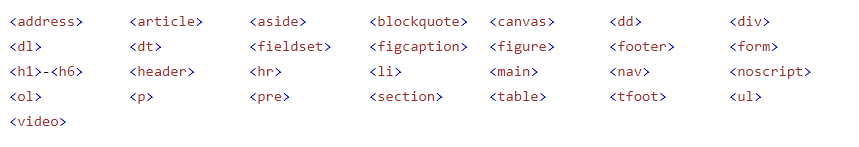
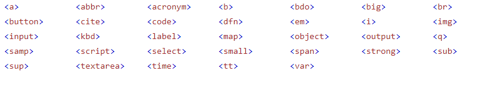

모든 HTML 요소에는 요소 유형에 따라 기본 표시 값이 있다.
두 가지 표시 값이 있다: block & Inline
HTML 에서 block-level 요소 
This is an inline span Hello World element inside a paragraph.
HTML 에서 Inline 요소 
div 요소는 HTML요소의 컨테이너로 사용된다.
div요소에는 필수 속성이 없지만 스타일, 클래스 및 ID는 공통이다.
CSS와 함께 사용하면 div요소를 사용하여 콘텐츠 블록의 스타일을 지정할 수 있다.
London is the capital city of England. It is the most populous city in the United Kingdom, with a metropolitan area of over 13 million inhabitants.
Standing on the River Thames, London has been a major settlement for two millennia, its history going back to its founding by the Romans, who named it Londinium.
span 요소는 텍스트의 일부 또는 문서 일보를 마크업 하는데 사용되는 인라인 컨테이너이다.
My mother has blue eyes and my father has dark green eyes.